Discovery Project
ECE 1100 | Georgia Tech
Project Idea
Built for CreateX and other GT startup programs
- Started with a magnetometer to detect rebar and hidden metal inside concrete using grid-based magnetic field measurements
- Added an RGB-D camera to tie sensor readings to physical position and build early 2D and 3D maps
- Pivoted the idea toward drone-based inspection to eliminate lifts and scaffolding
- Final direction: drone-mounted GPR with a gimbal to scan structures from a distance and get rebar depth without surface contact
Project Progress
- Built a full embedded sensing pipeline with a Raspberry Pi and magnetometer: real-time logging, noise filtering, and 2D heatmap generation.
- Ran real scans on a metal-embedded concrete slab and detected internal metal patterns in the output data.
- Integrated RGB-D camera data to generate point clouds and early 3D mesh representations of scanned surfaces.
- Recognized the commercial opportunity through CreateX and decided to pursue Verus, an AI platform automating GPR bridge deck analysis, replacing a largely manual inspection process.
- Trained a 1D-CNN on over 650,000 labeled GPR signals across sixteen model versions, deployed a live inference server, and began inspecting real bridge data directly from a professional GPR firm.
Phase 1 Photos
Magnetometer pipeline: hardware setup, raw data, and heatmap outputs before the pivot to Verus
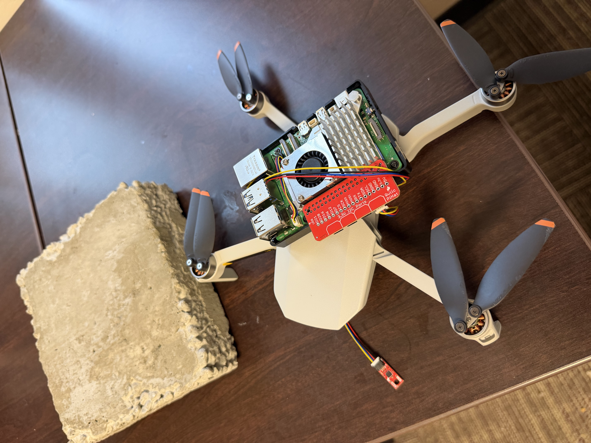
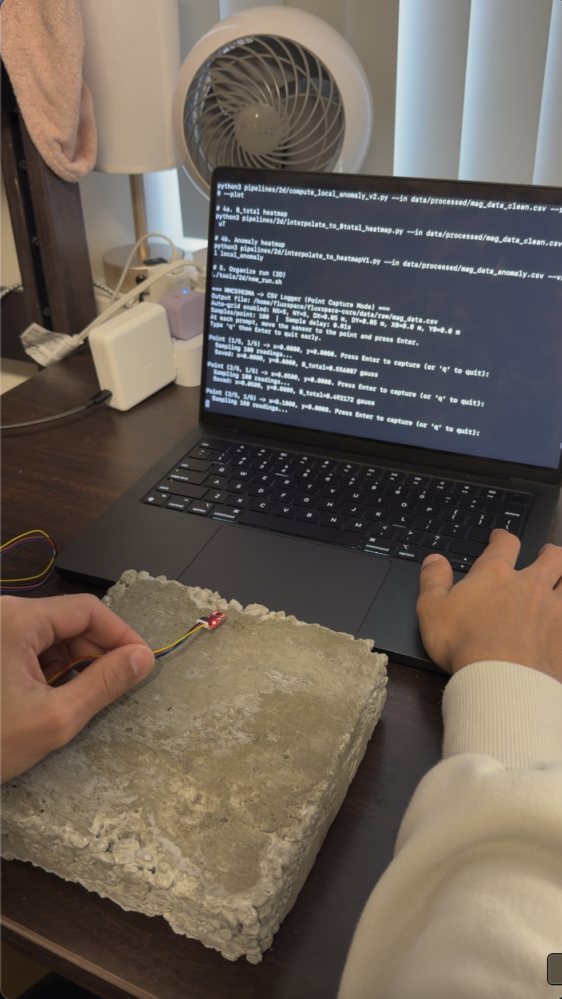
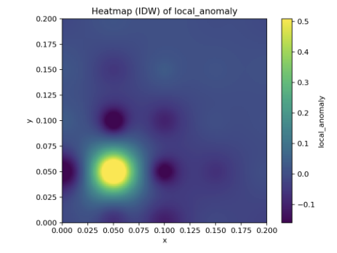
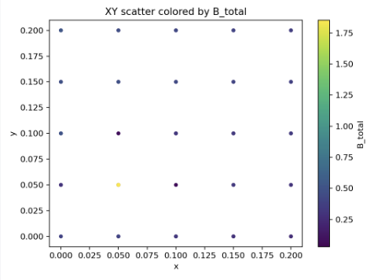
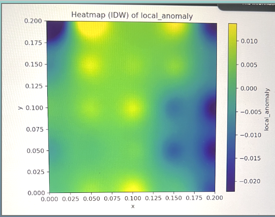
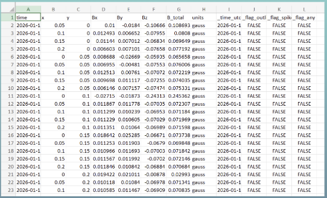
Phase 2 Photos
Verus platform and GPR pipeline: live app, real bridge data, and AI output
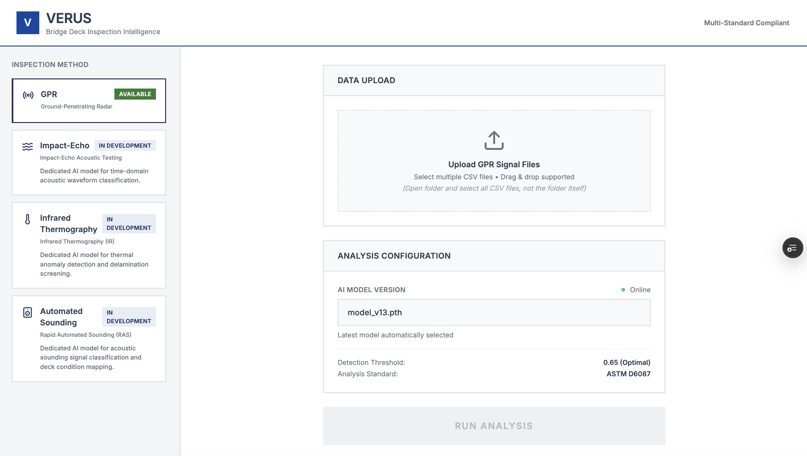
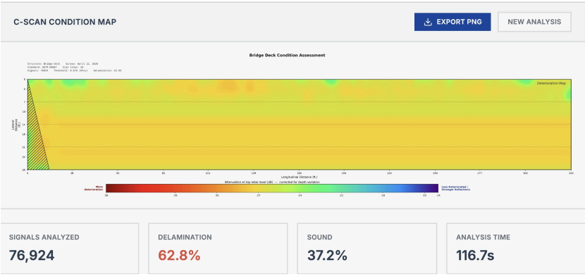
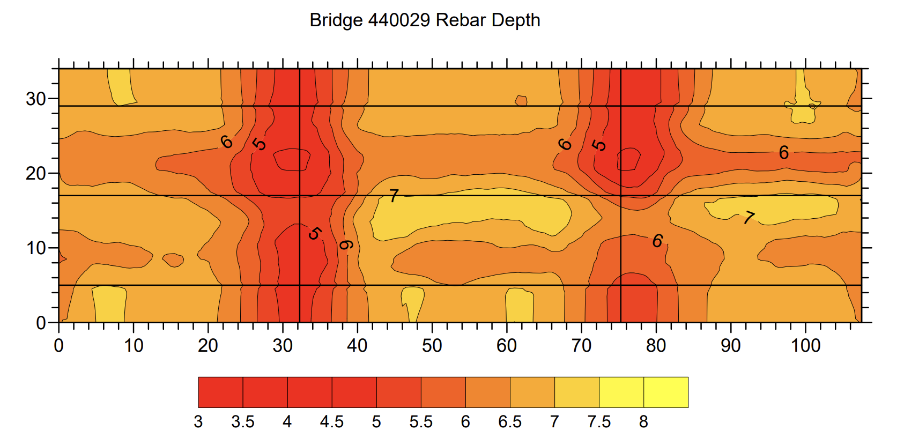
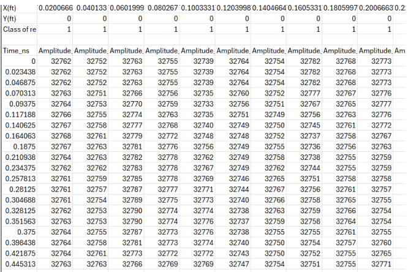
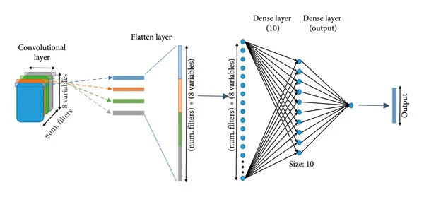
Successes & Failures
Successes
- Full hardware-software pipeline working end-to-end: sensor to Raspberry Pi to heatmaps.
- Built and deployed a complete AI pipeline from raw GPR signals to a live web product.
- Ranked top 10% at Y Combinator across two batches, secured a PearX Ventures interview, and competing in the Klaus Fusen World Competition.
Failures
- Early sensor data was noisy and inconsistent; took significant time to separate signal from noise from real anomaly.
- 3D mapping is harder than expected, specifically, aligning sensor data with spatial data.
- Magnetometer alone had fundamental depth limits, forcing a pivot to GPR.
- Six consecutive feature-engineering approaches in the ML model failed before switching to a neural network architecture.
ECE Skills Gained
Embedded Systems
I2C sensor integration with Raspberry Pi, hardware debugging across the full sensing pipeline.
Signal Processing
GPR waveform filtering, amplitude analysis, and electromagnetic wave propagation in subsurface media.
ML Engineering
1D CNNs in PyTorch, focal loss for class imbalance, weighted sampling, and precision-recall optimization.
Computer Vision
RGB-D cameras, point cloud generation, and early 3D mesh construction from sensor data.
Systems Integration
End-to-end pipeline from raw sensor data through preprocessing, neural network inference, server, and deployed frontend, all in one product.
Final Thoughts
- I learned more from the failures than the successes. Debugging a noisy sensor pipeline, watching six ML approaches fail, figuring out why 3D alignment was breaking.
- CreateX pushed me to think in terms of industry and real use cases, not just in terms of what would satisfy an ECE requirement. That shift in framing changed how I approached every technical decision.
- The project continued after this class. Verus moved into Startup Launch over the summer, and we kept applying to other startup incubators.
Media
PearX:Founder
PearX:Demo
YC X26:Founder
YC X26:Demo
Startup Launch:Founder